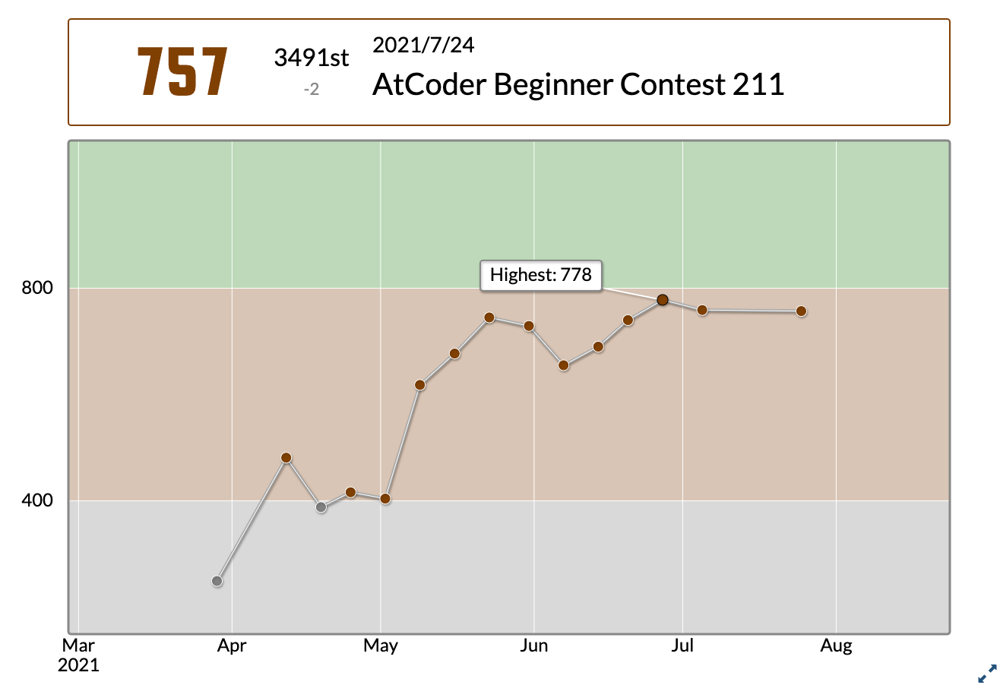

プログラマにとっての「適度な運動」としての
競技プログラミング
実演編
2022/05/16
黒木 慎介
ここまでのあらすじ
- （Fukuoka.rbでのLT）
- プログラマとしての健康維持のためにコードを書くと良い
- 作りたいものがない時には競技プログラミングをやると良い
- 「難しい」「ガチらないといけない」「続けなきゃいけない」すべて誤解である
この発表では？
- やってみせるのがあんまりできなかったので、実演をやっていきます
- 黒木がやった「工夫」のみせびらかし
AtCoder
- 競技プログラミング大手
- ここでやる前提で話します
期待値の調整/私の成績

緑にすら未到達、ドヤれる成績ではないです
まず簡単な問題で流れを見せます
概要
- 「こういう入力が与えられるので、こういう出力を返してください」
- 計算、並び替え、探索、などなど
- 使うのは標準入力と標準出力
- 知らない人は少し慣れは必要かも
- 毎週末にみんなが「いっせーの」で解いて、得点を競う
- いつでも解ける問題も置いてある
- Rubyを含めて、だいたいどんな言語でも挑戦できる
工夫/最初から正しいコードを提出したい
- 手元で動作確認してから出せば良い
- そのための環境を作って置くと楽
工夫/私がやったこと

工夫/なんで間違ってるのかわからん時
- デバッグしたい
- でも余計な出力をすると不正解になるので、提出時にはデバッグプリントしない必要がある
- そのための環境を作って置くと楽
工夫/私がやったこと

実演
工夫/処理時間がどうしても足りない時
- 大前提: オーダーが駄目だったら何をしても駄目
- O(n^2)が求められる時にO(n^3)だと駄目
- 求められるオーダーを達成しても、係数で駄目な場合
- 10nを3nにしないと正解できない、的な
- Rubyではありがち（つらい）
工夫/処理時間がどうしても足りない時
プログラミング言語Crystal
- 静的型付けのコンパイル言語
- Rubyとほぼ同じ文法
- 「ほぼ」というのがポイントで、微妙に違う
- 実行速度がだいぶ速い
実演
そんなわけで
- やったことない人はぜひ一度
- ruby-jp slackの #atcoder #crystal がおすすめ